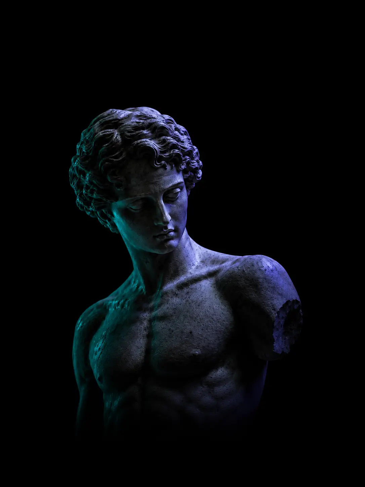

PURE/SYNC
A subpixel-grade rendering kit for the second decade of the modern web — built for engineers who still care how a single line of light arrives on a panel.

A toolkit, not a framework.
There is a particular shape of software that tries very hard to be useful and, in doing so, makes itself difficult to live with. Subpixel is not that shape. It is a set of small primitives that move pixels, and a uniform clock that keeps them honest.
The kit ships one bundle, sub-thirty kilobytes gzipped, with no peer dependencies. It binds directly to live DOM nodes — headings, images, video — and asks each one to give up its raster for the length of a frame. The shader does the rest, on the GPU, where it should.
Threshold-based column scans, perceptual luminance, brightness intervals, hue intervals, masks. The defaults look like a memory of a CRT; the parameters open onto a quieter, weirder country where the rules of the panel relax just enough to let a familiar image become unfamiliar without leaving the grid.
The pipeline is three passes — downsample, rank, gather — but you do not need to think in passes. You think in nouns: threshold, key, direction. The shader keeps the verbs and the bookkeeping; the API hands you a small surface that reads like a print specification rather than a graphics library.
It will run on any GL2 surface, which is to say nearly every browser made after the year the iPhone learned to do widgets. Where it cannot run, it falls back to a small CSS approximation that is honest about being one — a static stand-in, never pretending to be the thing it replaces.
What it is for, in the end, is the moment when a still image is allowed to break: when a heading dissolves down its column for a second, when a portrait reorders itself by brightness and then settles again as if nothing happened. A glitch, but a polite one. A glitch on time, in service of the page beneath it.
Subpixel does not collect telemetry, does not phone home, does not ask you to sign in to anything. It is a file you include and a class you instantiate. The license is permissive. The defaults are dark. The bundle is small enough to fit, with room to spare, in the gap between two ad-network scripts.
Set in IBM Plex Mono and Space Grotesk. Drawn on an M1 at the kitchen table, between the hours when the city has finished one thing and not yet started the next.
Clip 0014 · 02m 14s
Aspect · 21:9 · 24 fps